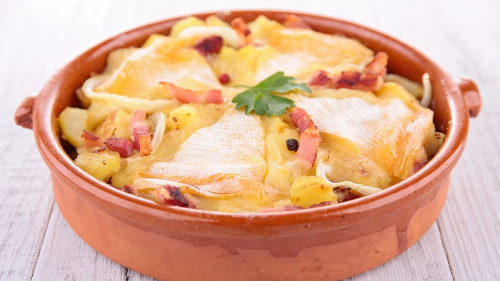

Recette Tartiflette

Description
La tartiflette est un plat savoyard réconfortant, parfait pour les soirées
froides. Pour préparer ce délice, commencez par éplucher et trancher des
pommes de terre en rondelles épaisses, puis faites-les précuire jusqu'à ce
qu'elles soient tendres. Pendant ce temps, faites revenir des lardons dans
une poêle jusqu'à ce qu'ils soient dorés et croustillants, puis ajoutez
des oignons finement émincés et faites-les cuire jusqu'à ce qu'ils soient
translucides et légèrement caramélisés.
Dans un plat à gratin, disposez une première couche de pommes de terre,
suivie des lardons et des oignons. Ajoutez ensuite une généreuse quantité
de crème fraîche pour apporter de l'onctuosité. Coupez un fromage
Reblochon en deux dans le sens de l'épaisseur et placez les moitiés sur le
dessus du plat, croûte vers le haut. Enfournez le tout à 200°C pendant
environ 20 à 30 minutes, jusqu'à ce que le fromage soit fondu et doré.
Servez bien chaud, accompagné d'une salade verte pour équilibrer la
richesse du plat.
Ingrédients
- Pommes de terre : 1kg
- Reblochon : 1 fromage (environ 450g)
- Lardons : 200g
- Oignons : 2 gros
- Crème fraîche : 20cl
- Vin blanc sec (optionnel) : 10cl
- Sel : au goût
- Poivre : au goût
- Ail (optionnel) : 1 gousse, pour frotter le plat
Étapes
- Préparation des pommes de terre :
- Épluchez et coupez les pommes de terre en rondelles épaisses.
-
Faites-les précuire dans une grande casserole d'eau bouillante salée
pendant environ 10 minutes, jusqu'à ce qu'elles soient tendres mais
encore fermes. Égouttez-les et réservez.
- Cuisson des lardons et des oinons :
-
Dans une grande poêle, faites revenir les lardons à feu moyen jusqu'à
ce qu'ils soient dorés et croustillants.
-
Ajoutez les oignons finement émincés et faites-les revenir avec les
lardons jusqu'à ce qu'ils soient translucides et légèrement
caramélisés. Si vous utilisez du vin blanc, ajoutez-le à ce moment et
laissez réduire quelques minutes.
- Préparation du plat à gratin :
-
Si vous utilisez de l'ail, frottez l'intérieur d'un plat à gratin avec
une gousse d'ail coupée en deux.
-
Disposez une première couche de pommes de terre dans le plat à gratin.
- Assemblage :
-
Répartissez les lardons et les oignons sur la première couche de
pommes de terre.
- Ajoutez une deuxième couche de pommes de terre par-dessus.
- Versez la crème fraîche uniformément sur les pommes de terre.
- Ajout du Reblochon :
- Coupez le Reblochon en deux dans le sens de l'épaisseur.
-
Placez les moitiés de Reblochon, croûte vers le haut, sur les pommes
de terre et la crème.
- Cuisson :
- Préchauffez votre four à 200°C (400°F).
-
Enfournez le plat à gratin et laissez cuire pendant environ 20 à 30
minutes, jusqu'à ce que le fromage soit fondu et doré.
- Service :
-
Sortez la tartiflette du four et laissez-la reposer quelques minutes
avant de servir.
-
Servez la tartiflette bien chaude, accompagnée d'une salade verte pour
équilibrer la richesse du plat.
Suivez ces étapes pour préparer une délicieuse tartiflette qui régalera
vos invités.